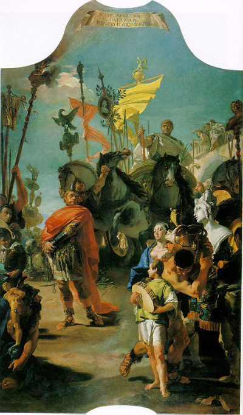
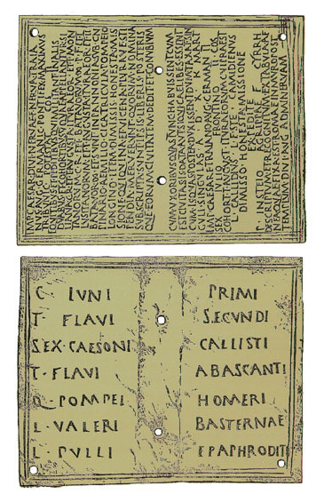
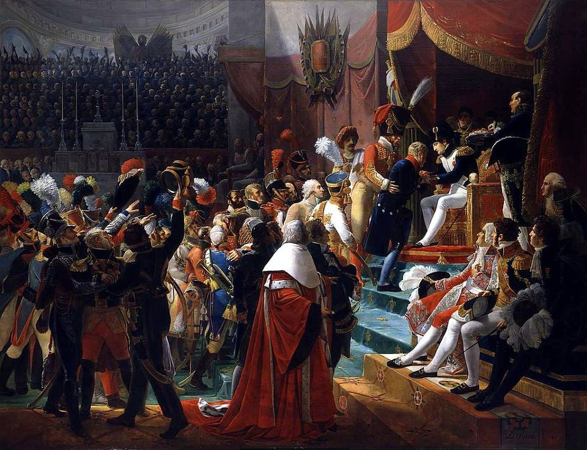
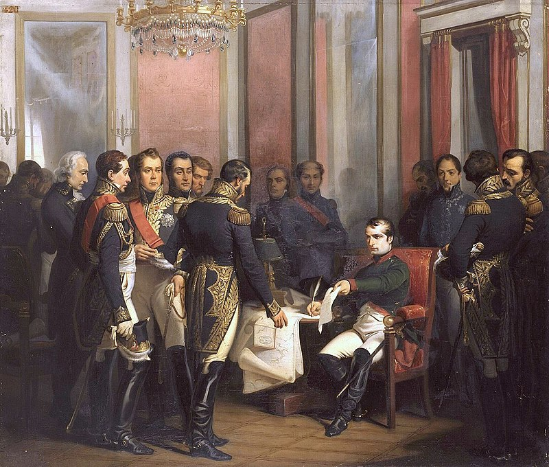
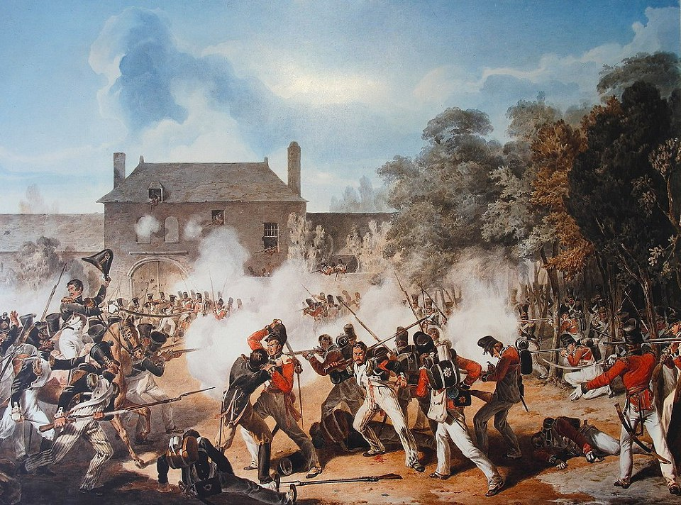

나폴레옹 시대의 군인 연금 이야기
게시: 2018-05-17T06:30:00+09:00
최근에 어느 독자분께서 '나폴레옹 당시 부상당해 불구가 된 병사들에 대한 처우는 어떠했는가'라는 질문을 올리셨습니다. 그에 대해 짧게 댓글은 달았습니다만, 생각난 김에 전에 다음블로그에 썼던 글을 다시 올립니다.
전에 장군님 출신의 개인택시기사분을 만난 썰을 푼 적이 있습니다만, 그 전직 장군님은 결코 먹고 살 길이 없어서 택시 운전을 하시는 것은 아니었습니다. 그 분도 하신 말씀이 "군인 좋은 거 하나도 없어요, 딱 하나, 연금이 빵빵하게 나온다는 것 빼고 말이에요" 라고 하시더군요. 그만큼 미국 못지 않게, 우리나라도 군인 연금 자체는 꽤 잘 되어 있는 것으로 알고 있습니다.
그리스 시대의 시민 병사들은 상비군이 아니었고, 직업 군인이라고 할 만한 사람들은 (어떻게 되든 상관없는) 그냥 외국인 용병 정도였기 때문에, 이들을 위한 노후 대책 따위는 존재하지 않았고, 애초에 필요하지도 않았습니다. 이런 점은 로마 시대 초기에도 마찬가지였다가, 제정 로마 시대 즈음해서 제대 병사들을 위한 복지 혜택이 생겨나기 시작했습니다. 제대하는 로마 군단병이 받을 수 있는 혜택은 로마 장군 마리우스(Marius)가 최초로 만들었다고 전해집니다. 즉, 마리우스는 병사들이 제대할 때, 정착할 수 있는 농토를 약속해주었던 것입니다. 그러다보니 생겨난 부작용이, 바로 로마군의 정치적 변질이었습니다. 즉, 병사들이, 국가보다는 그 약속을 이루어줄 장군 개인에게 충성을 하게 되면서, 건전했던 로마 시민군은 직업 군인화 되면서 장군 개인의 사병(私兵)으로 전락하게 된 것이지요. 아니나 다를까, 이 마리우스는 훗날 술라(Sulla)와 함께 로마의 권력을 두고 쿠데타와 역쿠데타 등을 일으키며 정치 군인으로서 파란만장한 삶을 살다 갔습니다.

(킴브리족과 튜톤족의 침입으로부터 로마를 구한 마리우스의 개선식)
아무튼 제정 로마 시대의 로마 군단병은 거의 최초의 정규 직업 군인이라고 할 수 있었는데, 이들은 25년간 복무하고 나면 명예 제대(missio honesta)를 할 수 있었고, 보통은 이와 함께 (로마 시민이 아니었던 경우에는) 로마 시민권 및 연금 또는 토지를 함께 받았다고 합니다. 이러한 제대 군인의 이력 및 권리를 언제라도 제시할 수 있도록 아예 청동판에 기록하여 제대하는 병사에게 주었는데, 이의 이름이 바로 diploma였습니다. 요즘 말로는 졸업장이라고 번역되지요.

(로마 군단병들의 diploma. 아마 이걸 받았을 때의 기쁨은, 요즘 대학 졸업장 받았을 때보다 100만배는 더 기뻤을 것 같습니다.)
나폴레옹 시대에는 어땠을까요 ? 연금이라는 것은 어디까지나 장기 복무한 직업 군인에게 주어지는 것이었습니다. 프랑스군은 징집제에 의해 이루어진 군대로서, 대부분의 병사들은 직업 군인이 아니라 몇년간의 복무 후에 (대개는 나폴레옹 전쟁 내내 군에 붙들려 있었지만) 제대하여 원래의 농촌이나 공장 등으로 되돌아갈 사람이었기 때문에 연금과는 상당한 거리가 있었습니다. 하지만 전투에서 큰 공을 세우거나 특히 공을 세운 뒤 전사한 사람에게는 종종 레종 도뇌르(Legion d'Honneur) 훈장과 함께 본인 또는 그 유족에게 연금이 주어지곤 했습니다. 가령 1815년 워털루 전투 직전 샤를루아(Charleroi) 북쪽에서 프러시아 군과 교전 중에 전사한 르토르(Louis-Michel Letort) 장군에게는 나폴레옹이 그 부인에게 연금을 부여했을 뿐만 아니라, 나중에 나폴레옹이 사망할 때는 그 유언 중에 르토르의 자녀들에게 10만 프랑(약 10억원)의 유산이 전해지도록 포함시켰다고 합니다.

(1804년 7월 15일, 앵발리드에서 최초의 레종도뇌르 훈장을 수여하는 나폴레옹입니다. 드브레(Jean-Baptiste Debret)의 작품입니다.)
나폴레옹이 창시한 레종 도뇌르 훈장 자체가 사실은 연금과도 상관이 있었습니다. 레종 도뇌르(Legion d'Honneur)는 원래 이름 그대로, 명예 군단(legion)을 뜻하는 것인데, 그 훈장을 받은 사람은 가상의 군단에 속하여 그 안에서의 가상의 계급을 받게 되어 있었습니다. 그리고 그 계급에 따라 연금을 받게 되어 있었지요. 이렇게 이 레종 도뇌르 훈장은 금전적인 혜택이 함께 하여 일종의 귀족 신분을 새롭게 만드는 결과를 낳았으므로, 애초에는 의원들의 강력한 저항을 받았다고 합니다. 아무튼 그 연금의 액수는 어느 정도였을까요 ? 최고 계급인 경우 연간 5천 프랑, 지휘관급인 경우 2천, 일반 장교인 경우 1천, 일반 병사인 경우는 250 프랑 정도였습니다. 요즘 금 1g을 대략 4만원이라고 계산하면, 1 프랑은 대략 1만원 정도니까, 일반 병사가 레종 도뇌르를 받는다면, 일년에 250만원 정도의 연금을 받는 셈입니다. 뭐 그다지 많다는 생각은 들지 않네요.
프랑스군이야 징집제니까 그렇다치고, 영국군은 어땠을까요 ? 영국군은 나폴레옹 전쟁 이전이나 이후나, 모병제에 의한 직업 군인 제도를 유지했고, 특히 모병에 응할 때는 대개 '평생 복무'에 서명을 했기 때문에, 병사들의 노후 대책에 각별한 신경을 써야 했습니다. 병사들이 다 늙어서 이제 도저히 군 복무를 할 수 없을 지경이 되면 제대를 시켜야 할텐데, 평생을 군에서 사람 죽이는 기술만 배운 늙은 병사를 아무 대책 없이 사회로 내보낼 수는 없었을테니까요.
그런데 실제로는 거의 그렇게 했습니다. 일단, 영국군 병사가 정말 50세 60세가 되도록 평생 복무를 했느냐를 살펴 보아야 합니다. 요즘처럼 고용 불안이 심각한 시대에, 평생 복무의 조건이 붙어 있다고 하면 사실 고용 보장이 확실한 것이니까 아주 좋은 조건이라고도 할 수 있습니다. 하지만, 여러분이 보시기에 50대 병사가 무거운 군장을 매고 하루에 20 km를 행군한 뒤 차가운 땅바닥에서 노숙을 할 수 있을 것 같습니까 ? 전혀 아니지요. 당시 장교들 생각도 마찬가지였습니다. 그래서, 실제로는 대략 15년 복무를 하고 나면, 대개의 병사들은 제대가 허락되었는데, 만약 제대 안 하겠다고 버티면 강제로 제대를 시켜버렸습니다. 즉, 평생 복무라는 것은, 군대가 원할 경우 평생토록 군에 말뚝을 박아야 한다는 뜻이지, 병사가 원할 경우 평생토록 군대가 먹여살려주겠다는 이야기는 아니었던 것이지요. 이렇게 제대할 때는 아무런 연금 혜택이 없었습니다.
연금 혜택을 받기 위해서는 25년 (아마도 로마군의 전통에서 비롯된 복무 연한인 듯...)을 채워야 했는데, 이렇게 25년간 복무를 하고 나서 받는 연금은 고작 하루 6펜스였습니다 ! 현재 가치로 따지면, 약 6천2백원 정도입니다. 맥도널드에서만 밥을 먹는다고 해도, 하루에 두끼 사먹기도 어려운 금액이네요. 옷값이나 주거비는 빼고도 말입니다. 만약 군에서 부상을 당하거나 하여 제대해야만 하는 경우, 25년 복무 기한을 채우지 않고서도 일당 6펜스의 연금을 받기도 했습니다만, 그 경우에는 그나마 평생이 아니고 1달에서 최대 5년까지만 연금을 주었습니다. 그 이후로는 어떻게 되냐고요 ? 그에 대한 답변은 God knows 라고 쓰고 '알게 뭡니까' 라고 읽습니다. 그야말로 높으신 장군님들이나 공직자 나으리들 알 바 아니었던 것입니다. 대개는 무슨무슨 전투에서 나라를 위해 싸우다 불구가 되었다는 팻말을 든 거지가 되거나, 운이 좋은 경우는 고향 마을에서 가족과 해당 교구의 부담거리가 되었습니다.
(이렇게 조국을 위해 몸바쳐 싸운 결과가 하루 6천원 ??? 그것도 최대 5년간만 ???)
보통 10대 후반 또는 20대 초반에 멋모르고, 혹은 모병관의 감언이설에 속아서 군에 입대한 청년이, 40대 중반의 나이에 군에서 제대하여 다시 직장을 구한다는 것은 무척 어려운 일이었습니다. 한마디로, 자랑스러운 대영제국의 레드코트들은 결국 길거리 노숙자로서 일생을 마치게 될 가능성이 아주 높다는 뜻이었습니다. 이는 단지 제대 병사 개인의 불행에만 그치는 것은 아니었습니다.
제1차 세계대전 때, 1917년 프랑스군의 대부분이 공격 명령을 거부하는 사태가 벌어졌습니다. 이는 공개적인 반란도 아니었고, 탈영도 아니었습니다만, 독일군의 철조망과 기관총을 향해 돌격하라는 명령을 확실하게 거부한 것으로서, 당연히 총살감의 사건이었습니다. 사실 이런 공격 명령 거부는, 1918년 독일군에서도 일어납니다. 루덴도르프가 주도한 1918년 독일군의 대반격은 이런 메시지로 사실상 마감됩니다. "...부대들은 이제 명령을 받아도 공격하려 하지 않는다. 공격은 끝났다."
(그 명령 거부자들은 어떻게 되었냐고요 ? 뭘 바라십니까 ? 군대는 군대인데, 뭐 좋은 꼴을 봤겠어요 ? 제1차 세계대전 중 공격을 거부했다가 총살당한 프랑스 병사들에 대한 이야기를 그린 '영광의 길'이라는 1953년 영화가 있습니다. 스탠리 큐브릭 감독에 커크 더글러스 주연입니다.)
왜 이런 사태가 벌어졌을까요 ? 병사들은 바보가 아니기 때문이었습니다. 공격에 나섰다가 죽을 확률이 10% 정도라면 병사들은 용감히 전투에 뛰어듭니다. 30% 정도라면 망설이겠지요. 그러나 결국 죽을 것이 확실한 지경에 이르면, 병사들은 공격을 거부하는 것입니다. 이와 마찬가지로, 군에서 성실히 복무하여 25년간 평생을 국가에 바친다고 하더라도, 결국 거지가 되는 것 말고는 방법이 없다고 하면, 군 전체의 사기가 어떻게 되겠습니까 ? 그래서인지, 영국 육군은 나폴레옹 전쟁 전후를 막론하고 음주 문제가 심각했고 각종 범죄도 아주 많았으며, 이렇게 말썽이 많은 병사들을 다루기 위해 처절한 체벌이 자주 동원되어야 했습니다. 내일도 없고, 잃을 것도 없는 사람들은 좋은 말로 다룰 수가 없는 법이거든요.
(이들을 움직이게 하려면 럼과 채찍 두가지가 필요합니다. 이들에겐 내일의 희망이 없어요...)
그나마 영국 해군의 경우는 육군보다는 사정이 더 나아서, 21년간 복무하고 나면 하루 1실링 또는 1실링 2펜스의 연금과 함께 명예 제대를 할 수 있었습니다. 하루 1만2천원에서 1만 4천원 정도의 돈인데, 이 정도면 그래도 굶어죽지는 않을 정도였겠고, 또 수병의 경우는 제대 후에도 상선이나 어선 등에서 일자를 구할 수도 있었으므로 확실히 더 좋은 조건이었습니다.
결국 나폴레옹 전쟁이 끝나고나서도 한참 뒤인 1840년대 정도가 되어서야, 육군에서도 의무 복무 기한을 10년 정도로 줄이고, 25년 복무 이후 연금액도 해군 수준인 하루 1실링 (1만2천원) 정도로 높이자는 제안이 나오게 되었다고 합니다.
나폴레옹 자신도 연금을 받았습니다. 1814년 4월 나폴레옹의 1차 퇴위 조건을 정한 퐁텐블로(Fontainebleau) 협정 때, 나폴레옹은 엘바(Elba) 섬의 통치권 뿐만 아니라 2백만 프랑(약 200억원)의 연금도 함께 받기로 되어 있었습니다. 물론 그 연금은 연합군 주머니에서 나오는 것은 아니었고, 복귀한 부르봉 왕가의 금고에서 나오는 것으로 되어 있었지요.

(퐁텐블로에서 부하 원수들에게 퇴위를 종용받는 나폴레옹입니다. 저기서 나폴레옹 목에 방울을 다는 역할은 역시 용감한 네(Ney)가 맡았다고 합니다.)
나폴레옹에게 너무 후한 것이 아니냐고요 ? 1년에 200억원이라면 저같은 사람에게는 자식하고 마누라를 팔아넘기는 것 빼고는 뭐라도 할 만한 금액입니다만, 나폴레옹과 같은 인물에게는 사실 별로 큰 액수는 아니었습니다. 가령 1812년 나폴레옹으로부터 이혼을 당한 조세핀의 경우, 이혼의 댓가로 말메종(Malmaison)의 대저택과 함께, 연간 3백만 (어떤 자료에는 5백만) 프랑의 연금을 받을 정도였습니다. 그런데 나폴레옹에게 고작 2백만 ? 글쎄요, 그래도 그 정도면 충분한 금액이 아니었을까요 ?
(나폴레옹이 제1통령 시절 구입하여 '평생 가장 행복했던 삶을 보냈던 곳'이라고 추억했던 말메종 저택)
충분하지 않았습니다. 엘바 섬에서는 얼마가 들었는지에 대한 통계치를 구하지 못했습니다만, 세인트 헬레나 섬에서 나폴레옹을 가둬두는데 소요되었던 비용에 대해서는 자료가 남아 있습니다. 사실 엘바 섬에서는 나폴레옹은 그 섬의 군주로서, 나름대로 호화롭고 자유롭게 지낼 수 있었습니다만, 세인트 헬레나 섬에서는 꾀죄죄한 집에 꾀죄죄한 옷차림으로 정말 포로처럼 지냈거든요. 찾아오는 손님들에게 포도주조차 제대로 대접하지 못할 정도로 곤궁한 삶이었다고 합니다. 그런데도 돈이 기가 막히게 많이 들어갔습니다.
나폴레옹 자신은 세인트 헬레나에 자신을 가둬두는데 영국 정부가 지출하고 있는 비용이 대략 연간 1천만 프랑(41만6천 파운드) 정도 될 것이라고 추측했습니다만, 실제로는 그보다 훨씬 적은 9만2천 파운드(약 2백2십만 프랑) 정도가 들었습니다. 다시 금 1g에 4만원 기준으로 계산하면, 대략 2백2십억원 수준입니다. 물론 이 비용 중 대부분은 나폴레옹을 감시하고 혹시나 있을 수 있는 나폴레옹 구출 계획으로부터 세인트 헬레나 섬을 방어하기 위한 군사비 및 그 관련 군인들의 봉급이었습니다.
(불만 많은 모험가였던 전직 영국 해군 장교 코크레인이 나폴레옹을 구출하려던 계획은 실제로 있었고, 그 스토리는 Bernard Cornwell의 Sharpe's Devil 편에서 자세히 묘사됩니다.)
정작 나폴레옹 및 그 식솔들에게 주어진 생활비는 그보다 훨씬 적었습니다. 가령 영국 정부가 나폴레옹에게 지급한 생활비는 겨우 1년에 8천 파운드(19만2천 프랑)이었다가 나중에야 너무 적다고 인정하고 1만 파운드(24만 프랑)으로 늘려줄 정도였습니다. 이 금액가 얼마나 짠돌이 액수였는지는 세인트 헬레나 섬의 영국 총독이었던 로우(Lowe)의 연봉이 약 1만2천 파운드였다는 것을 보면 아실 수 있을 것입니다. 나폴레옹을 미워하고 실제로 대놓고 마구 구박했던, 아주 나쁜 간수였던 이 로우 총독 본인이 계산한 바로는, 나폴레옹이 자신의 식솔들을 유지하는데 세인트 헬레나에서 실제로 썼던 돈은 연간 약 2만 파운드 정도였다고 합니다. 약 50억원 정도되는 돈이지요. 부족했던 연간 1만 파운드는 어떻게 했냐고요 ? 글쎄요, 누가 돈을 보내왔다는 기록은 보지 못했습니다만, 사실 돈이 세인트 헬레나 섬 현장에서 꼭 필요하지는 않았을 것입니다. 그 필요 금액 중 상당액은 아마 식솔들의 급료였을 것이므로, 프랑스 본국의 나폴레옹의 재산으로부터 본국에 남아있을 식솔들의 가족 또는 그 은행 계좌로 지급되고 있었겠지요.
(세인트 헬레나 섬에서의 나폴레옹의 초라한 모습...)
이렇게 세인트 헬레나 섬에서, 곤궁하게 살면서 수하에 수십명의 식솔들을 거느리는 것에만도 이렇게 많은 돈이 들었으니, 엘바 섬의 군주로서, 그것도 수백명의 고참 근위대(Old Guards)를 거느리고 살려면 엘바 섬에서 얼마나 많은 돈이 들었겠습니까 ?
하지만 정작 나폴레옹은 부르봉 왕가로부터 단 한 푼의 연금도 받지 못했습니다. 그야말로 공수표였던 것이지요. 연금으로 줄 금화 상자가 도착했다는 소식 대신 나폴레옹은 부르봉 왕가 및 코르시카 섬의 정적들이 자신을 암살하기 위해 자객들을 보낼 계획이라는 소식만을 들었습니다. 결국 1815년 나폴레옹이 엘바 섬을 탈출하여 백일천하의 난동을 일으켰던 것에는, 나폴레옹 본인의 억누를 수 없는 야망 외에도, 당장의 궁핍과 목숨에의 위협도 있었던 것이지요.

(뭐시라 ? 우리가 이렇게 죽어라고 싸우게 된 원인이 부르봉 놈들이 연금 지급을 안했기 때문이라고 ?)
혹시 부르봉 왕가가 연간 2백만 프랑의 연금을 아까와 하지 않고 순순히 나폴레옹에게 지급했더라면, 워털루에서 전사한 수만명의 영국, 프랑스, 독일, 네덜란드 병사들의 생명을 구할 수 있었을까요 ? 글쎄요... 그 대답은 나폴레옹 본인조차도 모를 것 같군요.